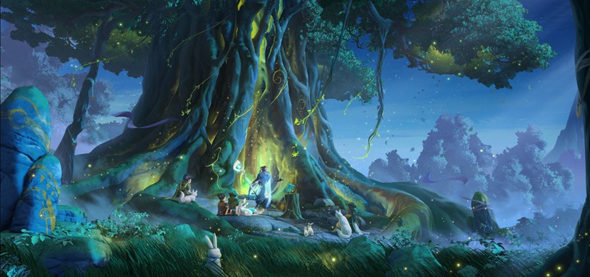
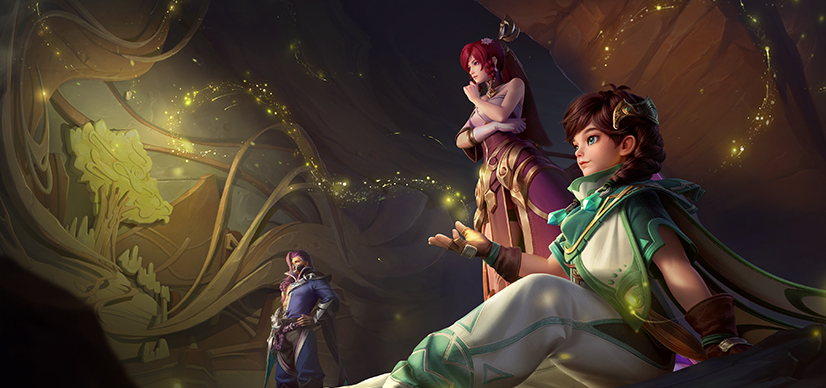
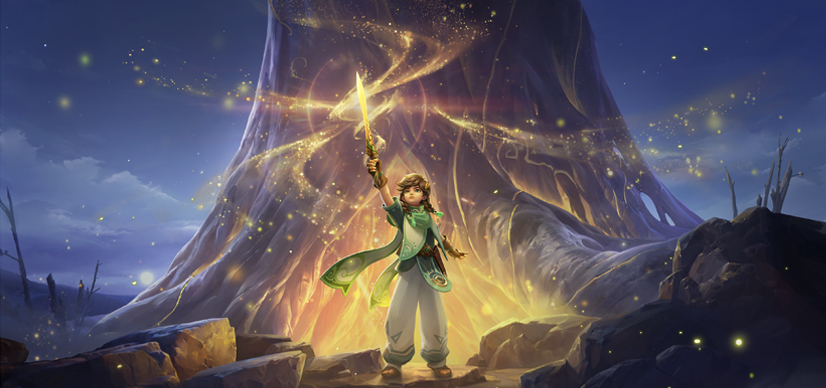
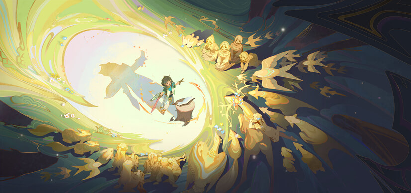
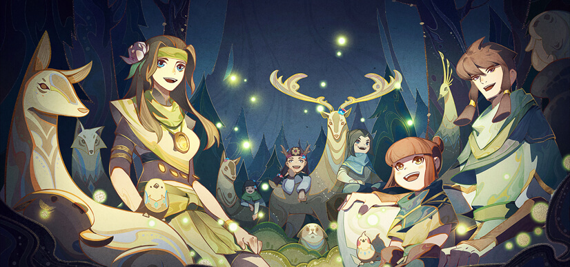
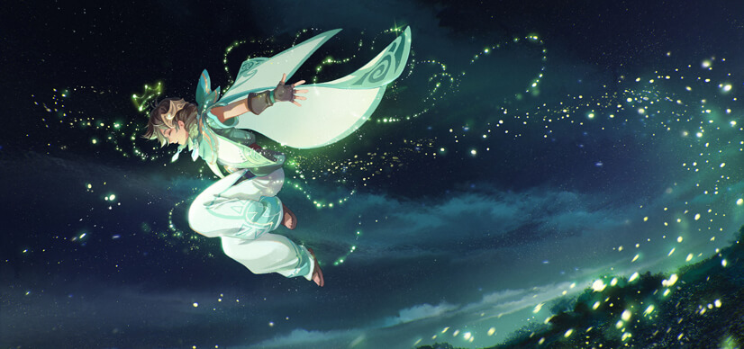
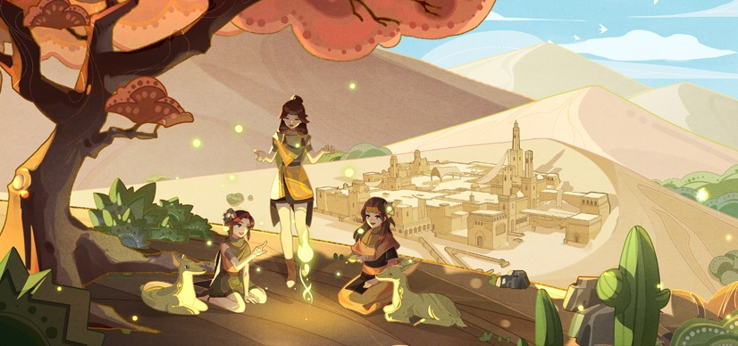
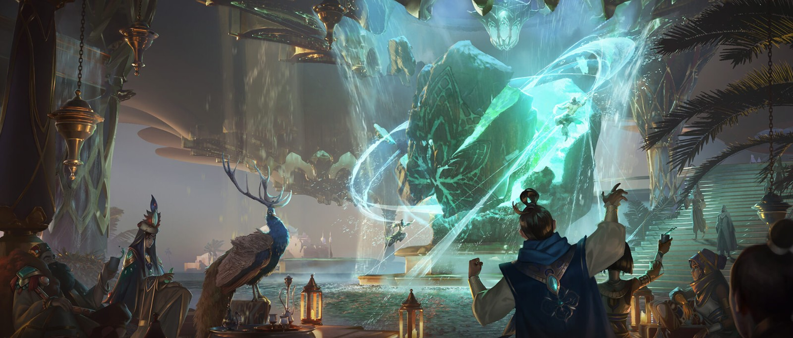
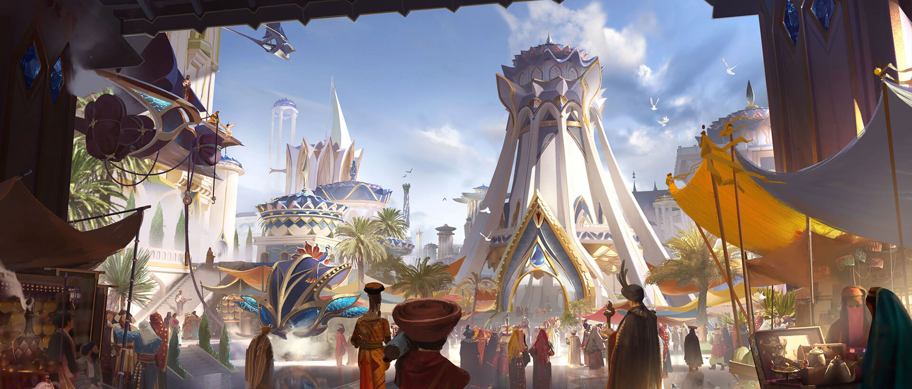

远游山川，星河在天
桑启来自与世隔绝的鸣沙，闭居太久的族人，对外界充满神往，为了将外面的故事带回家乡，他穿过禁地，踏上山川之旅。但等他将故事带回，却发现家乡已经消逝，他没有沉溺悲伤，而是像父亲一样，在枯萎的树下讲述新的故事，沉睡的萤火被点亮，他与过去勇敢道别。他会带着故人化身的萤火，继续踏上新的旅程，谱写更多的故事。

桑启出生于与世隔绝的鸣沙之谷，和其他族人一样，他从小就在萤火祖树下，听着族人讲述外面的故事长大，但有一天，先祖留下的故事都已讲完，鸣沙再不能听到新的故事，族人失落极了。
为了将新的故事带回家乡，他带上先祖的故事书和父亲送的木剑，偷偷穿过了从未有人闯过的石林迷阵，来到了“外面”的世界。
第一次见到广阔的云中漠地，桑启开心极了，他行走在云中诸国，记下了许多有趣的故事，他要将它们一一带回家，还只身前往千窟城，因为那里记载着文明长河中的无数故事。
但他误入千窟壁画，等再次出来时，外界已过去数百年，曾经繁盛绿洲已成荒漠，桑启想要回家。

在伽罗和兰陵王的帮助下，他历尽艰辛，终于回到了家乡，却发现家乡已在岁月的长河中消逝，曾经欢声笑语的鸣沙之谷，如今只剩一片残垣，就连族人心中永远繁盛的萤火祖树，也已枯萎。
桑启感到难过，泪水盈满双眼，但他没有陷在悲伤中，而是学着父亲的样子，在枯萎的萤火祖树下，缓缓地讲述他收集的新故事。
点点萤火自枯萎的树干中出现，它们环绕桑启飞舞，桑启仿佛再次置身鸣沙的夏至之夜，满山的城民围树而坐，身为族长的父亲站在中间，在族人期盼地注视中，翻开故事书，柔缓地讲述又一篇新故事，萤火在人群中飞舞，有若漫天星河洒落。
鸣沙的人相信，萤火是故人的化身，也是地上的星星。
只见萤火飞入祖桑木剑，凝成一把熠熠生辉的光剑，藏在其中的种子被洒在途中，光剑照耀下，一株新的树苗正茁壮成长。

桑启终于懂了，原来这便是父亲所说的“希望之剑”，他擦干眼泪，笑着对担忧的伙伴说：“没关系，我知道，鸣沙还在这里”。
祖桑的种子被种在鸣沙，终有一天，他会再次长成参天大树，庇护新的鸣沙之谷。
而希望的种子，则被种在了心里，桑启相信，鸣沙不会消失，他会带着故人化身的萤火，一起去遨游这个广阔的天地，去记下更多有趣的故事。
我们总会经历失去，真正的勇敢，不是不再害怕，而是就算心中害怕，仍能勇敢前行。桑启与过去勇敢告别，并怀揣希望，继续向新的远方出发。
“远游山川，星河在天”。
鸣沙之梦
唤醒桑启的是清脆悦耳的啼鸣，阳光从窗外照进房间，生活在鸣沙之谷的人们，又开始了一天的劳作。
桑启穿戴整齐，向外走去，沿路遇到清扫的王婆，修缮的张叔，插花的花影姐姐，提着箩筐送菜的方大哥，大家都笑着和桑启打招呼。
穿过王殿的走廊，干净的院落，最后走入香樟树林，就是鸣沙祖树的所在。今天是桑启十岁的生日，他很开心，每个人路过的族人，都可以看到他脸上欢快的笑容。
这是他从小长大的家园，王殿在山谷的中心，族人环绕王殿而居，小河从山间流下，沿东穿谷而过，没入地下。
一片香樟环绕之中，鸣沙祖树前，父亲和母亲早已等在那里，正笑着望着他。
“阿启，你也该有属于自己的木剑”，父亲拿出早已准备好的木剑递给桑启，桑启甚至还能闻到，木剑上散发着清新的树香，那是父亲用祖桑神木的树枝，一刀一刀，亲自雕琢而成。
桑启举着木剑，来回地看，他高兴得手舞足蹈，“太好了，我也有自己的木剑了”。
母亲则摸了摸桑启的头，拿出早就准备好的披风，这是她用祖桑叶养出的蚕丝，亲自缝制而成的。
“晚上就是你的生辰夜了，歌谣可曾记熟了？”母亲温和的地提醒道。
“放心吧，母亲，我已经背过不下百遍了。”
“还有和萤火沟通的方法，晚上就要看你了。”父亲也摸了摸桑启的头，笑着说道。
“恩，我早就和他们成为很好的朋友了。”
……
入夜时分，族人们沿着萤火祖树围坐，今天，是他们最喜爱的王子桑启的生日，他们喜欢这个活泼单纯的孩子，随着桑启举起木剑，族人们手拉着手，围着篝火，缓缓地载歌载舞。

桑启被大家围在篝火中心，闭着眼，清脆的民谣响起，那是鸣沙族人世代传唱的歌谣，象征着和平和美好，大家跟着他一起哼唱。
在桑启很小的时候，母亲就常在他耳边哼唱着这个旋律，就像摇篮曲一样，每当桑启听到这个声音，很快便能安然入睡，后来，他开始听族人们讲各种有趣的故事，父亲和母亲还教他如何用哼唱的方式将故事唱出来。
今天，他们唱的是鸣沙一族刚来到这里时，先王所作的歌。
离家千里的旅人啊
战火烧遍了我们的家乡
但我知道
争端并非你们本意
只是被风沙暂时遮住了眼
待到繁星升起
一切就会重回宁静
就像这世外的山谷
终将在欢声笑语中新生

族人们一遍遍哼唱，那是他们对和平美好的向往，对穿越石林，找到鸣沙之谷的先辈的感谢，对鸣沙之谷的感谢。
萤火环绕桑启飞舞，歌声毕，桑启睁开了眼，笑着和它们玩了起来，越来越多的萤火从祖树上飞出，包围着桑启，突然，萤火将他托了起来，族人们目光早就集中在了他的身上，他们眼中带着对桑启温暖的爱，正笑着看着这一切。
桑启向前往飞去，父亲和母亲正站在前方等着他，二人慈爱地看着桑启，眼中满是鼓励，桑启在父母的注视下，不再摇摇晃晃，他张开披风，擦身穿过父母，向人群外飞去。
“太好了，我会飞了！”人群之外，回荡着桑启开心的笑声。

……
“阿嚏”，风声回荡的空旷石林里，突然响起一个少年的声音，桑启揉了揉鼻子，睁开惺忪的双眼，一片落叶正盖在脸上，他靠着石林迷阵的石柱，在草地上睡了一宿。
昨夜，他梦到了几年前自己生辰时的情形，族人和父母笑容仿佛仍在眼前，他想起自己为了寻找新的故事，而孤身一人离开家乡。
书上说，石林迷阵是隔绝鸣沙内外的禁地，凡是闯入之人，都会永远地迷失其中。
但不知道为什么，桑启一点也没感觉到迷失，第一次见到石林迷阵时，他的眼中只有好奇，那是先祖故事书里留下的最后几个故事，它详细地记载了族人如何因躲避战乱而来到这里，又如何在萤火的指引下穿过石林迷阵，在濒临绝境之时找到了鸣沙之谷。
他拿着故事书，一点一滴地对照着，寻找着先祖留下的痕迹，时不时还发出一声感叹：“原来这里就是萤火指引我们曾走过的道路。”
他完全不知道自己走向了何方，也不知道自己什么时候就在石林中的枯草上睡着了，他只记得最后的最后，自己似乎在梦里和萤火跑了一路，跑累了，就随便在一株树下抱着树叶入梦。
清晨的阳光洒向这座金黄色的石林，桑启拍了拍身上的灰尘，站起来眺望远方，他突然发现一片片绿洲和商道出现在自己眼前，还有骆驼和商队摇摇晃晃地在上面行走。
原来不知不觉间，自己就已走出了石林。
桑启来不及思考这个问题，他只是感到由衷的开心，那是在鸣沙之外，他第一次见到这个广阔的天地，他心心念念的外面的故事。
桑启举起故事书，高兴地向石林外跑去。
“云中漠地，我来了，我一定会将新的故事，带回家乡。”
篝火夜谈
火堆里的木柴噼啪啦地烧着，清澈的少年拿着一本故事书，正有声有色地讲述他过去的旅途。
戴着面具的男子坐在他旁边，时不时往火堆中添加柴火，另一边则坐着一个知性的年轻女子，戴着面纱，正静静听少年讲述。
这是一个归家旅途中的普通夜晚，漫天星斗垂落，绵绵黄沙无边，桑启和兰陵王伽罗，正在某个驿站旁，围着篝火，轻声交谈。
周边还有零散的商队，也在进行各自的闲聊，有爽朗者，不时发出一声大笑，有多才多艺者，偶尔唱起几声故乡的小调。
长相清秀的少女正端着茶水请客人们享用，驿站里的厨子正忙着准备今天的烤肉。
“都是些几百年前的故事，书中之人，早已不在。”
桑启刚讲完一个焉其王举行开春大典的故事，兰陵王盯着跳动的火苗，淡淡地说道。
“所以我想把他们记下来。”
“故事总会消失。”
“记在书里的故事，就不会。”
兰陵王站了起来，指了指驿站，以及更远处的商道和沙漠，“云中与过去，已然不一样。”
“风景确实是不一样了，”桑启顺着兰陵王指的方向望去，“但现在，也藏着许多有趣的故事，就像这里，以前从未见过这样的驿站呢。”
伽罗柔声说：“这是由玉城人所修建，他庇护了来往的旅人，让外面的风沙不再可怕，就像沙漠中的丝线，将散落如珠的旅人串在了一起。”
“快看，周围的大伙们，也在分享他们一路走来的故事呢。”桑启看着不远处正高举大碗的商客说道。
“当大家开始讲述自己故事的时候，关系也在一点点变近。”伽罗脸上浮现了笑容。
“曾经的焉其，何尝不是如此，真王陨落之后，它将周边诸国连成一片，结束了方圆百里百年来的混乱，人们迎来安居，大家变得亲近，像这样有趣的故事，每天都在各地发生。”一个爽朗的笑声从身后传来。
原来不知何时，出店招呼客人的老板娘也来到了他们身旁，这是一个虽见过诸多风霜，却依然风韵犹存的女子。
但她本喜悦的话语却突然一转，泛起淡淡忧伤。“只是云中的城邦，却总逃不过毁灭的命运，真王陨落时划下的伤痕，仿佛成了这片大地上永远的诅咒。”
老板娘将烤饼放在他们身旁，继续说道：“先辈们曾试图打破它，失败了，云中再次回到了曾经的混乱，甚至更胜往昔，商道的来客们，也可见的少了。”
“但这不是我们的未来，也不是我们希望的云中，总有一天，这片总是动荡的土地能获得平静，新的生机，会在这荒芜的沙漠中继续生长。”伽罗柔声说道。
“一定会的，你看千窟，不也从大火中醒来了。”桑启认真地说道。
“不如我给大家讲讲云中充满生机时的样子吧。”
“哦，那我可要好好听听。”老板娘看着桑启，又爽朗一笑，她也坐在了三人旁边，方才的忧伤似乎烟消云散。
大家都坐了下来，桑启打开了新的一页，开始讲述过去的云中诸国。
那时的云中，总能看到绵延不断的驼队，随处可见的绿洲和城邦，人们脸上也总带着笑容，每个城邦都有自己的特色文化与风光，各自茁壮地在这片土地上生长。
桑启总是为生活在那里的人和事而惊叹。

随着故事的讲述，过去的云中的繁华热闹被一点点揭开，桑启轻柔的话语，在众人耳边响起。“印象最深刻的，还是云中三年一度的商贸集会，我见到的那一年，正是由碎月城举办。” “记得那一日，整个商道上尽是赶往碎月的商队，他们就像沙漠中五颜六色的一条条丝线，不断跳动着迤逦着汇向碎月，最后编织成了一朵最美丽的烟花，在碎月城夺目绽放，经数月而不熄……”
“真想去看看啊！”不知何时，远方的商客也被吸引了过来，发出向往的感叹。
“现在的云中，确实冷清了些，就好像一个活泼的少年，突然睡着了。”送茶水的少女不知何时也伫立在了旁边。
“父亲说，睡觉是为了休养，等睡着的人再次醒来，会变得更充满活力。”桑启接过他们的话。
“如果醒后故人皆已不见？”兰陵王看向桑启。
“鸣沙的人相信，人故去之后，会化成萤火回到祖树上，他们，会一直在的。”
伽罗想要打断兰陵王，但抬起的手仍是放了下来，她知道，对于数百年后再次回到家乡，桑启需要做好准备。
“但有些东西总会消失，就像焉其，曾繁盛如星河，如今也只剩下一片废墟，过去的东西，永远都不会再回来了。”
“没关系，过去的没了，那我们就再建一个新的。”桑启合上书本，认真地说道。
“你看，这周围的驿站，也是几百年后的人，重新建造的。”
周围的商民们，都因为桑启这话而陷入了思索，桑启抬起头，发现此地所有的旅客，被他的故事吸引，不知不觉间，全都围了过来。
云中的人，都在期盼一场复兴，但复兴不是回到过去，应当是，一次新的开始。
桑启指着远方，笑着对大家说，“看，那就是鸣沙的方向，父亲说过，不要害怕迷失方向，星星会照亮我们的归途，而萤火，就是地上的星星。”
“我们的归途，正在被点亮。”桑启引导着附近飞来的光。
新的旅程
桑启穿过玉城高大的城门，沿着宽阔的玉石打造的长长街道，再次走入了这座阔别许久的城市。
他与几人作别，再次踏上了新的旅程。
踏足如今的云中，桑启发现许多地方都已改变，但玉城却仍保留着过去的味道，数不清的节日活动，各式各样的才艺表演，琳琅满目的玉制商品，川流不息的商人旅客。
过往的繁华，仿佛被永远定格在了这里，广阔的云中，活力皆往这里汇聚。
走在玉城的街道上，人们的闲谈传人他的耳中，这里有来自云中各地的人，他捕捉着其中有趣的故事。
桑启一路走，最后走到了玉城广场，发现玉匠商会正好在举办纪念穆仪公主的活动，有开玉匠人，现场进行精妙夺目的开玉秀。

人群围成一片，注视着中心活动的进行，玉城的百姓，不会忘记这位将“云蚕丝”带回玉城，引领玉城技艺走上新台阶的公主。
桑启“见”过那段往事。
那时的玉城，远不如现在繁华，虽坐拥无限美玉，却苦于没有精湛的雕琢技术，无法将玉塑造出最美好的模样。
直到一位名为“穆仪”的王室公主诞生，她依照诸国传统，前往千窟求学，在那里被千窟记载的雕琢之美深深吸引，求学期间亲自动手，将那些最精湛的技艺一一重现，还因此获得了千窟学者的身份。
诸事具备的她，仍欠缺一个切割玉石的上好材料。
于是遍寻云中，想要找到一个既轻盈锋利又坚韧的事物，却始终无果，直到一个河洛游商提起了稷下的特产“云蚕丝”，她毅然动身，孤身一人远赴稷下带了回来，还和彼时的贤者签订了协议，稷下和玉城从此开启了通商。
这些都是桑启数百年前旅行云中时，玉城人最耳熟能详的故事，每到穆仪公主的纪念日，大家都会反复向新的孩子和朋友讲起，如今再次听到，桑启仍觉得很感动，仿佛又回到了和穆仪公主同游的那段时间。
沉浸在回忆里，桑启不知不觉间穿过了人群，走到了中间，接着商会前面的故事讲了起来。

“其实，穆仪公主还是一个很爱玩乐，对所有美好事物都充满好奇的姐姐。”所有人都听过故事的前半段，却鲜有人知道后半段。
玉匠商会的会长担心这突然出现的少年会对穆仪公主不敬，想要命人将他请下去，但旁边贵气的青年却挥手制止了这道命令。
“正因为她总是能发现各种各样的美，所以玉石才能在她手中变换出各种模样。”当少年一点点讲述过去的故事时，会长悬着的心也一点点放下。
“遇到公主时，她本是想让我给他讲一讲云中各地的趣事，但我后来发现，公主姐姐去过的地方比我还要多，反而从她那里听到了与云蚕丝有关的故事。”
“她还拿出各种不同的玉石雕刻和我书里绘制的风物对照，我们发现有许多东西竟都一样。”
“我也是从公主姐姐那里知道了千窟壁画的存在。”
随着桑启的讲述，萤火在其身旁，组成一幅又一幅生动的画面，玉城的人们第一次真切的看到，穆仪公主曾经的故事。
看到她如何从千窟归来，如何寻到云蚕丝雕琢玉石，如何引领玉城的人们，又如何和桑启一起讨论那些有趣的故事。那个只存在于记录中的单一的公主，生动活泼的出现在了大家眼前，大家都看得呆了。
……
“今天的故事就讲到这里吧。”
落日渐渐西斜，桑启合上了故事书，萤火重新回到了木剑里，但玉城的人们仍望着桑启，不愿离开。
“恩，如果大家还想听，我可以明天再来。”桑启看着大家期盼的眼神，笑着说道。
这是许多人心中，穆仪公主最难忘的一个纪念日，虽然看着不过十多岁的少年说他见过数百年前的公主，但大家意外的竟没有深究，仿佛只要那少年轻缓柔和的语调想起，他们就会沉浸在少年的故事里，不再思考其他。
已到晚饭时分，桑启的肚子开始咕咕作响，一些贵族和富商趁机向桑启发出邀请，想请少年一起用膳，顺便在饭桌上继续听他讲述穆仪公主的故事。
桑启摸了摸肚子，想了想，还是笑着拒绝了，他掏出伽罗临别前给他的信，向那些人问道：“你们知道，晟在哪里吗？”
“哦，你要找我吗？”方才制止那道命令的青年越众而出，笑着站在了桑启面前。
“你就是晟吗，伽罗姐姐说，若来了玉城，有需要便可找你。”
“几日前我就收到了伽罗姐的传书，说的就是你吧。”在桑启刚来到这里时，晟就已经猜到了。
“你肚子饿了吧，我知道玉城有很多美食，走，我请你吃饭。”晟挥退亲卫，带着桑启穿过人群。
玉城渐渐进入了热闹的夜，街道灯火次第亮起，丰富的夜游活动正式开始。
“听说玉城来往的商客有很多，你一直生活在这里，一定知道许多有趣的故事吧。”桑启跟在晟的旁边，一边听晟介绍玉城，一边向他打听。
“在云中的西边，是不是还有一个面朝大海的巨大城市啊。”桑启指着一个担子里挑着各种贝壳小玩意儿的商贩说道。
“你说的是海都吗？”晟带着桑启，正驻足在商贩前观看。
“好想去那里看看啊。”和商贩道别后，二人又继续边走边聊。
夜色如染，转眼二人就融入了灯火璀璨的玉城街道中。
 微信
微信 支付宝
支付宝


{kind=link}